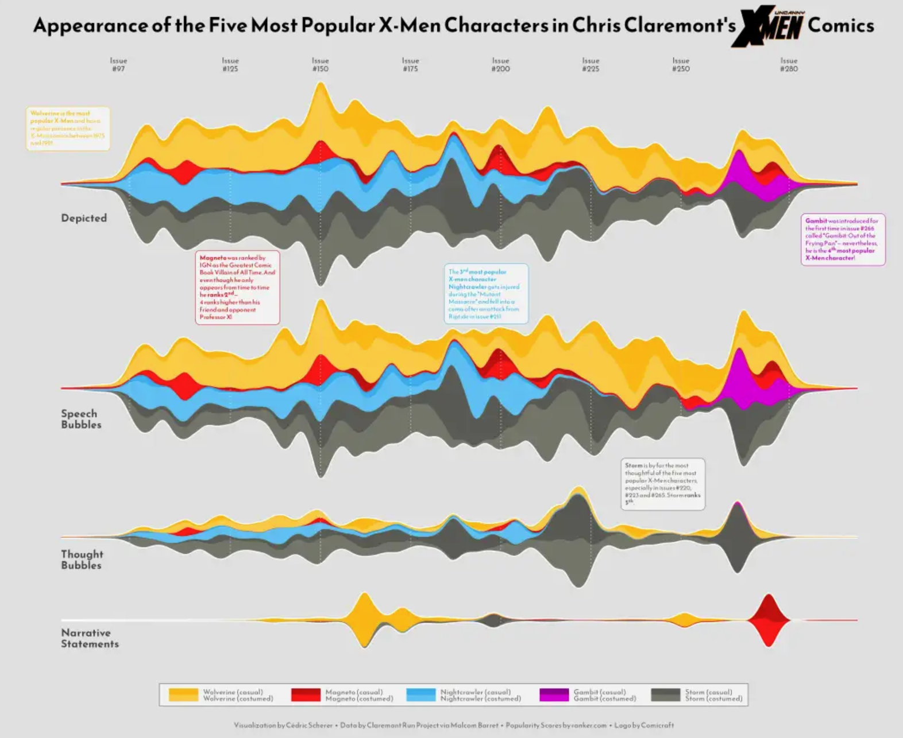
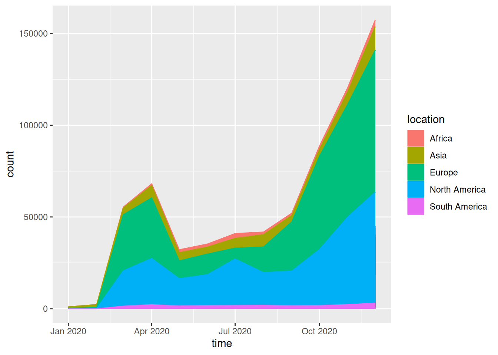
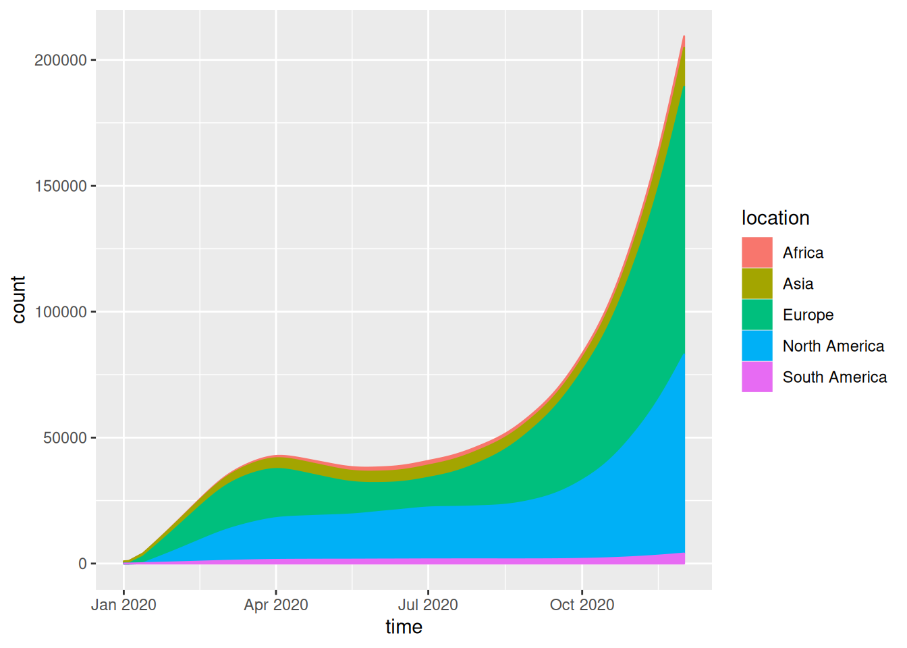

# Install packages
if (!requireNamespace("streamgraph", quietly = TRUE)) {
remotes::install_github("hrbrmstr/streamgraph")
}
if (!requireNamespace("dplyr", quietly = TRUE)) {
install.packages("dplyr")
}
if (!requireNamespace("htmlwidgets", quietly = TRUE)) {
install.packages("htmlwidgets")
}
if (!requireNamespace("ggplot2", quietly = TRUE)) {
install.packages("ggplot2")
}
if (!requireNamespace("ggstream", quietly = TRUE)) {
install.packages("ggstream")
}
# Load packages
library(streamgraph)
library(dplyr)
library(htmlwidgets)
library(ggplot2)
library(ggstream)Streamgraph
A Streamgraph is a stacked area diagram. It represents the evolution of numerical variables across multiple groups. Typically, it displays areas around a central axis with rounded edges to create a flowing shape.
Example

Setup
System Requirements: Cross-platform (Linux/MacOS/Windows)
Programming Language: R
Dependencies:
streamgraph,dplyr,htmlwidgets,ggplot2,ggstream
Data Preparation
The study primarily utilizes the built-in R dataset ChickWeight and a batch of COVID-19 infection data from 2020.
# 1.R's built-in data - ChickWeight
## This dataset contains 50 samples in total. The dataset chick_new_2 below selects 5 representative samples with a Diet value of 1.
chick_new_1 <- subset(ChickWeight,Diet=="1")
chick_new_2 <- chick_new_1[c(1:12,144:155,73:95,156:167),]
# 2.Data on COVID-19 infections in 2020 (data source: GISAID database)
## The following data was obtained through data processing, where covid_all represents the total number of people infected with COVID-19 in different regions each month.
covid_all <- readr::read_csv(
"https://bizard-1301043367.cos.ap-guangzhou.myqcloud.com/covid_all.csv")
head(covid_all)# A tibble: 6 × 6
...1 X.1 X location time count
<dbl> <dbl> <dbl> <chr> <date> <dbl>
1 1 1 1 Africa 2020-01-01 17
2 2 2 2 Asia 2020-01-01 787
3 3 3 3 Europe 2020-01-01 119
4 4 4 4 North America 2020-01-01 78
5 5 5 5 South America 2020-01-01 2
6 6 6 6 Africa 2020-02-01 14covid_month <- readr::read_csv(
"https://bizard-1301043367.cos.ap-guangzhou.myqcloud.com/covid_month.csv")
head(covid_month)# A tibble: 6 × 7
...1 X.2 X.1 X location month count
<dbl> <dbl> <dbl> <dbl> <chr> <dbl> <dbl>
1 1 1 1 1 Africa 1 17
2 2 2 2 2 Asia 1 787
3 3 3 3 3 Europe 1 119
4 4 4 4 4 North America 1 78
5 5 5 5 5 South America 1 2
6 6 6 6 6 Africa 2 14Visualization
1. Basic plotting (using the streamgraph package)
Flowcharts can be built with just a few lines of code.
1.1 Basic code
Taking the data on COVID-19 infections in 2020 as an example
streamgraph(covid_all, key = "location",
value = "count",date = "time",
height="300px", width="1000px")Basic code
This streamgraph depicts the number of people infected with the novel coronavirus in different regions at different times in 2020.
Stream graphs created using the streamgraph package allow you to directly display specific information by hovering the mouse over different colors; alternatively, you can use drop-down buttons to see the details of each sample.
1.3 Change shape
The shape of the streamline diagram can be changed by adjusting the interpolate parameter.
streamgraph(covid_all, key = "location",
value = "count",date = "time",
interpolate="step",
height="300px", width="1000px") %>%
sg_legend(show=TRUE, label="location: ")Change shape
This streamgraph depicts the number of people infected with the novel coronavirus in different regions at different times in 2020.
1.4 Change color
scale_fill_brewer(): Uses an R ColorBrewer palette, including both continuous and categorical colors.scale_fill_manual(): Constructs a custom color palette: simply provide a vector containing the selected colors.
streamgraph(covid_all,key = "location",
value = "count",date = "time",
interpolate="linear",
height="300px", width="1000px") %>%
sg_fill_brewer("Reds")Change color
This streamgraph depicts the number of people infected with the novel coronavirus in different regions at different times in 2020.
2. streamgraph offset
There are three possible scenarios:
silhouette: The shape is displayed on either side of the horizontal axis.zero: Displayed above the 0 line.expand: Equivalent to a percentage stacked area chart; the full height is used to visualize the percentage.
2.1 silhouette
streamgraph(covid_all,key = "location",
value = "count",date = "time",
offset="silhouette",
height="300px", width="1000px")silhouette
This streamgraph depicts the number of people infected with the novel coronavirus in different regions at different times in 2020.
2.2 zero
streamgraph(covid_all,key = "location",
value = "count",date = "time",
offset="zero",
height="300px", width="1000px")zero
This streamgraph depicts the number of people infected with the novel coronavirus in different regions at different times in 2020.
2.3 expand
streamgraph(covid_all,key = "location",
value = "count",date = "time",
offset="expand",
height="300px", width="1000px")expand
This streamgraph depicts the number of people infected with the novel coronavirus in different regions at different times in 2020.
3. Save the chart as an HTML file
Use the saveWidget() function from the htmlwidgets package.
pp <- streamgraph(chick_new,key = "Chick",
value = "weight",date = "Time",
height="300px", width="1000px")
saveWidget(pp, file=paste0( getwd(), "/HtmlWidget/streamgraphDropdown.html"))4. Basic plotting (using the ggplot2 package)
Compared to the streamgraph package, the ggplot2 package allows for more detailed customization.
4.1 Basic code
Take the data on COVID-19 infections in 2020 as an example.
covid_all %>%
ggplot(aes(time, count, fill = location, label = location, color = location)) +
geom_area()
This streamgraph depicts the number of people infected with the novel coronavirus in different regions at different times in 2020.
4.2 Beautify plot
Adjust curve shape:
geom_stream()Adjust color:
scale_fill_manual()andscale_color_manual()
covid_all %>%
ggplot(aes(time, count, fill = location, label = location, color = location)) +
geom_stream(type = "ridge", bw=1) 
This streamgraph depicts the number of people infected with the novel coronavirus in different regions at different times in 2020.
4.3 Taking ChickWeight data as an example
chick_new_2 %>%
ggplot(aes(Time, weight, fill = Chick, label = Chick, color = Chick)) +
geom_area()
This streamgraph illustrates how the weight of different chicks changes over time.
Applications
This streamgraph shows the temporal variation of the influenza lineage cycle. [1]
Reference
[1] Dhanasekaran V, Sullivan S, Edwards KM, Xie R, Khvorov A, Valkenburg SA, Cowling BJ, Barr IG. Human seasonal influenza under COVID-19 and the potential consequences of influenza lineage elimination. Nat Commun. 2022 Mar 31;13(1):1721. doi: 10.1038/s41467-022-29402-5. PMID: 35361789; PMCID: PMC8971476.
[2] Wickham, H., & François, R. (2019). dplyr: A Grammar of Data Manipulation (Version x.y.z). Retrieved from https://CRAN.R-project.org/package=dplyr
[3] Rudis, B. (2015). streamgraph: An htmlwidget for building streamgraph visualizations. Retrieved from https://github.com/hrbrmstr/streamgraph
[4] Wickham, H., & Romain François. (2024). devtools: Tools to Make Developing R Packages Easier (Version 2.4.5). Retrieved from [https://CRAN.R-project.org/package=devtools](https://cran.r-project.org/package=devtools
[5] Vaidyanathan R, Cheng J, Allaire JJ, Xie Y. htmlwidgets: HTML Widgets for R. R package version 1.6.4. 2023. Available from: https://CRAN.R-project.org/package=htmlwidgets.
[6] David Sjoberg (2021). ggstream: Create Streamplots in ‘ggplot2’. R package version 0.1.0. https://CRAN.R-project.org/package=ggstream